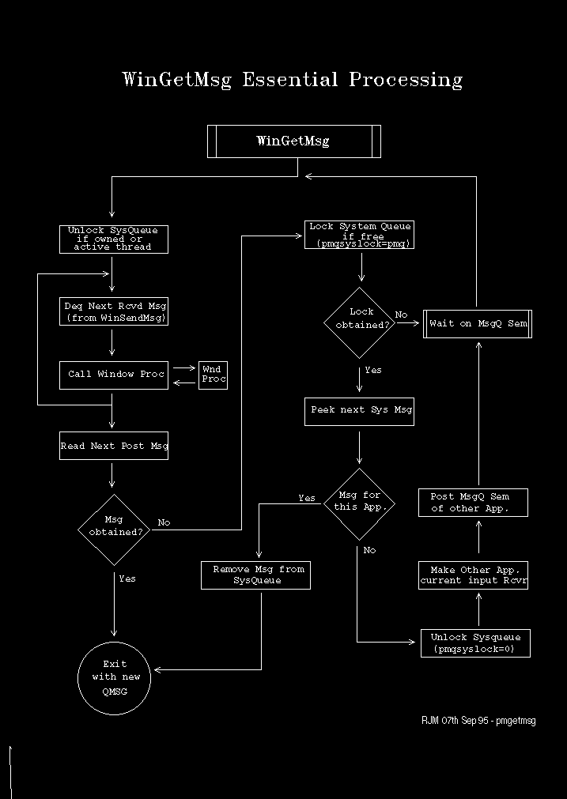

WinGetMsg operates essentially as a loop that waits for message activity and returns messages to the user. Conceptually the application's code acts as an inverted subroutine of WinGetMsg. This was illustrated in The PM Messaging Environment.
These are the essential steps in WinGetMsg processing:
The MQ of the current system queue owner is pointed to by pmqsyslock. This is set to zero if this points to the MQ of the current thread.
The active thread is the thread that has the right to unlock to system queue if locked by another thread. Normally this is the thread that manages the MQ of the window in focus. Normally the thread that has locked the system queue is the active thread.
If SMSs are queued then each is removed successively and the corresponding window procedure is called.
Received messages, that is messages sent via WinSendMsg to this thread, are not returned by WinGetMsg. The window procedure is called directly.
If one is found it is dequeued and returned to the application.
if pmqsyslock is zero it is set to the current thread's MQ address.
If the lock was unsuccessful we return to the beginning of the loop and wait on the message queue semaphore.
The possibility of holding the system queue lock while running in user code is vital to note. While this happens only active thread can dequeue a system queue message. The reason for holding the system queue lock is for performance. It is likely that one system message will be followed by a sequence for the same thread. If the lock was released, unnecessary processing on other message queue threads would take place. More recently queued messages could not be processed out of turn anyway, since the interpretation of a system message depends upon the outcome of the preceding system message.
PM distinguishes between current mouse, keyboard and event receiver. WinGetMsg makes the other application the current mouse, keyboard or event receiver depending upon the message category.
This processing is illustrated in the following diagram: